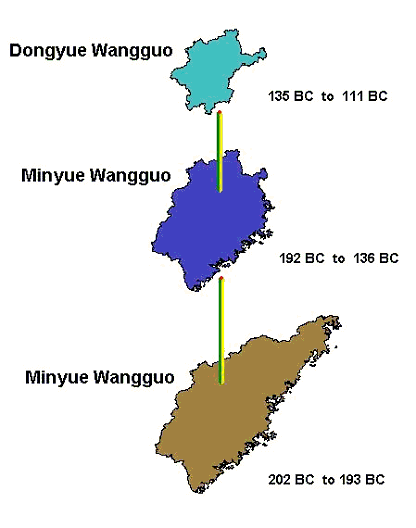
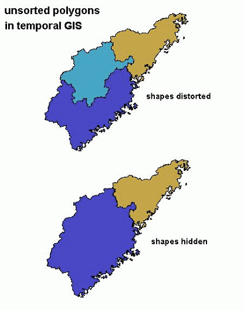
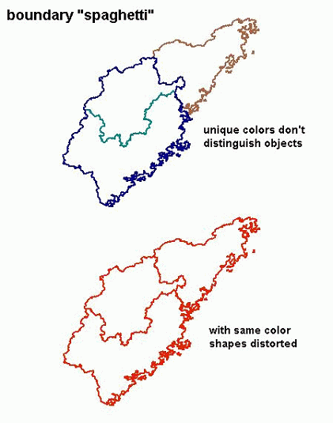
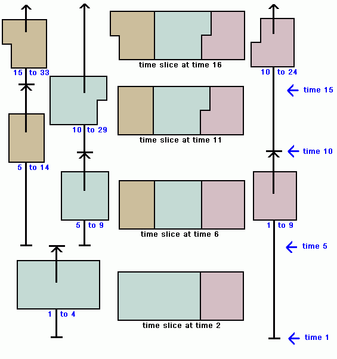
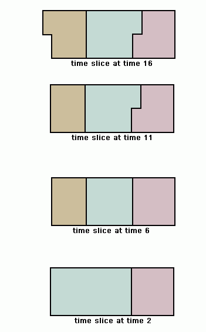

The CHGIS project publishes datasets which must be opened with GIS (Geographic Information Systems) software, such as ESRI ArcGIS (paid license), or QGIS (freeware). You will not be able to use CHGIS data, unless you are able to learn how to use GIS software.
See an Intro to GIS by National Geographic Society.
The datasets published by CHGIS fall into several types:
- Time Slice data
- Time Series data
- Digital Elevation Model basemap
CHGIS also provides an online search engine and API (application program interface) for looking up individual placenames.
- The search engine is a simple form for filtering by name, feature type, year of existence.
- The API is meant for machine-actionable programming methods to search the CHGIS gazetteer and retrieve data in various formats such as JSON and XML.
What is Time Series data?
To visualize Time Series data, consider the diagram below, which shows a group of polygon objects as they change over time. They are temporally seperate, but spatially overlapping objects.

If these three objects existed in the same GIS layer, (indeed, these are found in the Time Series Regime Polygons layer), they would stack up on top of one another and obscure one another's shape. The result would be a representation in which the true areas of the objects could not be accurately distinguished visually. Depending on the order in which the objects are stacked, which is determined only by the order they happen to appear in the GIS table, they might be shown partially distorted or completely obscured, as seen in the next image.

What we are accustomed to seeing as maps, are in fact geographic snapshots in time, or Time Slices. Time slices are simply layers of spatial objects for which the valid date is the same for all the objects. When we open up a road atlas, all of the features shown are considered to be current as of the publication date. To see historic layers of spatial information overlayed one upon the other is unusual in printed maps, and is always done with a very limited number of layers which can be distinguished from one another. For our Time Series data, we have no limit on the number of objects that may occupy or overlap the same space, therefore the visualization of the data, results in the sort of problems described above. Even if we remove the fill color of the polygons, we are still left with a completely ambigious series of overlapping boundary lines, known in GIS parlance, as "spaghetti."

To make visual sense of Time Series data it is expedient to extract a subset of the data which is valid for a particular time, in other words to filter out a single Time Slice from the "spaghetti" of objects. Because the smallest unit of time in the CHGIS datasets is one year--the temporal granularity--if we can select all the objects which were valid for a single year, we will effectively create a Time Slice for that year.
To get an idea of how this works, see the following diagram, in which the changing time series of polygons are represented with vertical bars, while their respective begin and end dates appear as labels in blue font . The polygons are representative of historical places that change at different times, so the records for each unique historical object have asynchronous begin and end dates.

For example, the pale jade colored polygon, has three historical instances shown on the diagram. The first instance is valid from time 1 to time 4, the second instance from time 5 to time 9, and the third instance from time 10 to time 29. By contrast, the tan colored polygon was first established at time 5, and took jurisdiction over part of the area formerly part of the jade colored polygon. In other words, the area of jurisdiction of the jade polygon was reduced, and the area that the jade polygon lost was placed under the jurisdiction of the newly created tan polygon. This is a typical example of the changes being tracked in the CHGIS datasets.
In the center column are shown Time Slices, which are a subset of the Time Series data. The objects in a Time Slice are valid for a single year. Therefore, by selecting only the objects which were valid for time 2, we obtain a Time Slice at time 2, shown at the bottom of the center column.
To select a single year from the Time Series data, use a Query Expression for ArcGIS, or QGIS.
What is Time Slice data?
To visualize Time Slice data, consider the diagram below, which shows a group of polygon objects valid for four different dates.

By gazing at the four consecutive time slices from bottom and moving upwards, we can grasp how the objects changed over time. For instance, the pale jade colored polygon shrank in size between time 2 and time 6, and the area which the jade polygon lost became a new tan colored polygon. Then, between time 6 and time 11 the jade polygon expanded slightly, while the lavender colored polygon shrank in size. We can deduce that these changes occurred, but from the time slices depicted we cannot tell when the changes occurred.
It would be convenient if the actual historical places depicted changed simultaneously at regular intervals, as the diagram seems to imply. But in fact, historical administrative units and other geographic features are constantly changing independently of one another. They each have their own separate timelines, from the time they were first established or recorded, through various changes in name or jurisdiction, and up to the time they were abolished, absorbed or changed into a new feature. In reality, what we are dealing with in tracking historical geographic objects are a whole series of asynchronous events, and a whole series of spatial objects used to represent each one of the "instances" of change for those objects.
When these asynchronous objects are collected together into a single GIS layer, we refer to them as Time Series datasets.
When the historical places valid only for a particular year are collected together into a single GIS layer, we refer to them as a Time Slice dataset. Currently CHGIS data includes a complete Time Slice dataset for the year 1820, and a partial Time Slice dataset for the year 1911.